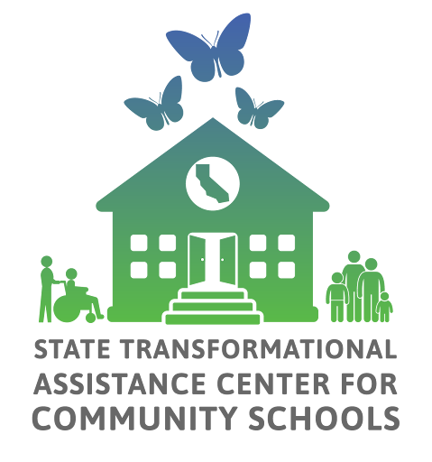

California Community Schools Partnership Program Annual Progress Report
APR Data & Insights
Resources
Previous APR Responses
Community Schools Needs and Assets Assessment (NAA) Guide
Capacity Building Strategies (CBS): A Developmental Rubric
Rubrics
Capacity-Building Strategies: Self-Assessments
Self-Assessments
Whole Child & Family Supports Inventory
The Annual Progress Report (APR) serves as a tool to assess implementation progress and efforts, and to encourage reflection as part of an ongoing continuous improvement process. The APR was designed to be filled out by each school’s California Community Schools Partnership Program (CCSPP) shared decision-making team or council to ensure the perspectives of students, staff, families and community partners are captured. The reporting portal is intended to align with required annual update presentations on community school planning, including data and outcomes from the prior year at each school site.
Through the Capacity-Building Strategies, CCSPP schools are building the core organizational, relational, and leadership foundations required for community schools implementation. In Year 3, “Strategic Community Partnerships” has the highest percentage of schools and LEAs with a self rating of being in the “Transforming” phase at 14%. Across all of the capacities, Year 3 findings for Cohort 1 show that schools are moving beyond the planning and visioning stage to true and enduring transformation. Learn more about schools’ capacities here and about LEAs’ capacities here.
CCSPP schools are experiencing steady increases in engagement across groups — especially families and community partners — signaling stronger relational infrastructure. Research tells us that these relationships are not peripheral; they are central to sustained implementation, equitable decision-making, and long-term success. Learn more here.
CCSPP schools are implementing a wide variety of whole child and family supports. Year 3 findings for Cohort 1 demonstrate a clear progression toward more comprehensive, integrated whole child implementation. Learn more here.
CCSPP schools are identifying the measures that matter most to their communities and using them to guide continuous improvement. Almost one-third of grantees in Year 3 indicate that they are using locally developed metrics to track progress in their school specific goals. Learn more here.
Most CCSPP districts and consortiums are developing systems to support school capacity to access, understand, and use data for continuous program improvement and pursuing policy initiatives that align with and reinforce the shared vision for community schooling. Findings also show strong external coordination, particularly for newer cohorts. Learn more here.
The APR is aligned with the California Community Schools Framework and also aligns with resources provided by the State Transformational Assistance Center (S-TAC) listed in the side bar.
The visualizations and tables throughout this site reflect the data from the CCSPP APR for school sites for Year 1 (2022-2023), Year 2 (2023- 2024), and Year 3 (2024-2025) school years.
Site & LEA Counts
| Cohort | Site Count |
|---|---|
| Cohort 1 | 457 |
| Cohort 2 | 571 |
| Cohort 3 | 998 |
| Cohort 4 | 469 |
| Grand Total | 2,495 |
| Cohort | LEA Count |
|---|---|
| Cohort 1 | 75 |
| Cohort 2 | 104 |
| Cohort 3 | 251 |
| Cohort 4 | 97 |
| Grand Total | 527 |
*Number of participating LEAs (unique). The number of granted LEA per cohort might vary, since some LEAs were awarded grants in more than one cohort.
 |